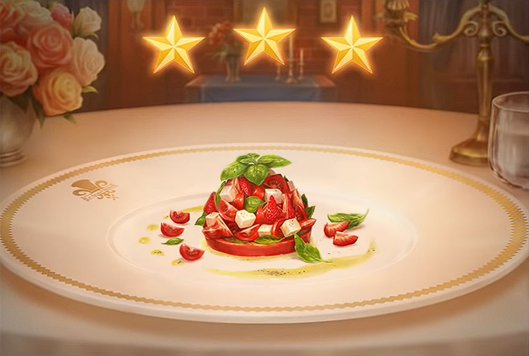

Caprese salad

Description
A twist on the typical Caprese salad. This can be a side dish or entire meal.
Ingredients
- 1 (5 ounce) package baby arugula
- 1 cup halved grape tomatoes
- 1 cup small fresh mozzarella balls
- ½ cup garlic seasoned croutons (Optional)
- 1 tablespoon basil paste
- ¼ cup balsamic vinaigrette salad dressing
- 1 pinch salt and ground black pepper to taste
Steps
- Toss arugula, tomatoes, mozzarella cheese balls, and croutons in a large bowl.
- Whisk basil paste into the balsamic salad dressing; pour on salad and toss to combine. Season salad with salt and black pepper, if desired.